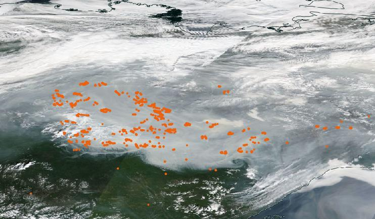

import ee
import geemap13 Google Earth Engine
13.1 Learning Objectives
- Understand what Google Earth Engine provides and its applications
- Learn how to search for, import, manipulate, and visualize Google Earth Engine Data
- Learn about some real-world applications of Google Earth Engine in the geosciences
13.2 Introduction
Google Earth Engine (GEE) is a geospatial processing platform powered by Google Cloud Platform. It contains over 30 years (and multiple petabytes) of satellite imagery and geospatial datasets that are continually updated and available instantly. Users can process data using Google Cloud Platform and built-in algorithms or by using the Earth Engine API, which is available in Python (and JavaScript) for anyone with an account (Earth Engine is free to use for research, education, and nonprofit use).
GEE is just one of a number of cloud platform solutions developed for climate and geoscience research. Others include Microsoft Planetary Computer, Pangeo, & Amazon Sustainability Data Initiative (ADSI)

So what’s so exciting about platforms like GEE? Ryan Abernathey frames this nicely in his blogpost Closed Platform vs. Open Architectures for Cloud-Native Earth System Analytics…
- as Earth System data have gotten larger, the typical download-data-work-locally workflow is no longer always feasible
- those data are also produced and distributed by lots of different organizations (e.g. NASA, NOAA, Copernicus)
- researchers often need to apply a wide range of analytical methods to those data, ranging from simple stats to machine learning approaches
GEE offers web access (i.e. no need to download data to your computer) to an extensive catalog of analysis-ready geospatial data (from many different organizations) and scalable computing power via their cloud service, making global-scale analyses and visualizations possible for anyone with an account (sign up here!). Explore the public Earth Engine Data Catalog which includes a variety of standard Earth science raster datasets. Browse by dataset tags or by satellite (Landsat, MODIS, Sentinel).
In this lesson, we’ll first get some hands-on practice connecting to and using Google Earth Engine to visualize global precicpation data. We’ll then walk through a demonstration using GEE to visualize and analyze fire dynamics in the Arctic.
13.3 Exercise 1: An introductory lesson on using Google Earth Engine
13.3.1 Part i. Setup
- Create a Google Earth Engine account (if you haven’t already done so)
- Please refer back to the Preface to find instructions on creating a GEE account.
- Load libraries
- Authenticate your GEE account
- In order to begin using GEE, you’ll need to connect your environment (
scomp) to the authentication credentials associated with your Google account. This will need to be done each time you connect to GEE, (but only be done once per session).
ee.Authenticate() # triggers the authentication process- This should launch a browser window where you can login with your Google account to the Google Earth Engine Authenticator. Following the prompts will generate a code, which you’ll then need to copy and paste into the VS Code command palette (at the top of the IDE). This will be saved as an authentication token so you won’t need to go through this process again until the next time you start a new session. The browser-based authentication steps will look something like this:
- Notebook Authenticator: choose an active Google account and Cloud Project (you may have to create one if this is your first time authenticating) and click “Generate Token”
- Choose an account: if prompted, select the same Google account as above
- Google hasn’t verified this app: You may be temped to click the blue “Back to saftey” button, but don’t! Click “Continue”
- Select what Earth Engine Notebook Client can access: click both check boxes, then “Continue”
- Copy your authorization code to your clipboard to paste into the VS Code command palette
- Lastly, intialize. This verifies that valid credentials have been created and populates the Python client library with methods that the backend server supports.
ee.Initialize() If successful, you’re now ready to begin working with Earth Engine data!
13.3.2 Part ii. Explore the ERA5 Daily Aggregates Data
We’ll be using the ERA5 daily aggregates reanalysis dataset, produced by the European Centre for Medium-Range Weather Forecasts (ECMWF), found here, which models atmospheric weather observations.
Reanalysis combines observation data with model data to provide the most complete picture of past weather and climate. To read more about reanalyses, check out the EWCMWF website.
Take a few moments to explore the metadata record for this dataset. You’ll notice that it includes a bunch of important information, including:
- Dataset Availability: the date range
- Dataset Provider: where the data come from
- Earth Engine Snippet: a code snippet used for loading the dataset
- Description (tab): get to know a bit about the data
- Bands (tab): the variables present in the dataset; each band has its own name, data type, scale, mask and projection
- Image Properties: metadata available for each image band
- Example Code: a script to load and visualize ERA5 climate reanalysis parameters in Google Earth Engine (JavaScript)
13.3.3 Part iii. Visualize global precipitation using ERA5 Daily Aggregate data
Content for this section was adapted from Dr. Sam Stevenson’s Visualizing global precipitation using Google Earth Engine lesson, given in her EDS 220 course in Fall 2021.
- Create an interactive basemap
- The default basemap is (you guessed it) Google Maps. The following code displays an empty Google Map that you can manipulate just like you would in the typical Google Maps interface. Do this using the
Mapmethod from thegeemaplibrary. We’ll also center the map at a specified latitude and longitude (here, 40N, 100E), set a zoom level, and save our map as an object calledmyMap.
myMap = geemap.Map(center = [40, -100], zoom = 2)
myMap- Load the ERA5 Image Collection from GEE
- Next, we need to tell GEE what data we want to layer on top of our basemap. The
ImageCollectionmethod extracts a set of individual images that satisfies some criterion that you pass to GEE through theeepackage. This is stored as an ImageCollection object which can be filtered and processed in various ways. We can pass theImageCollctionmethod agruments to tell GEE which data we want to retrieve. Below, we retrieve all daily ERA5 data.
Earth Engine Snippets make importing ImageCollections easy!
To import an ImageCollection, copy and paste the Earth Engine Snippet for your dataset of interest. For example, the Earth Enginge Snippet to import the ERA5 daily aggregates data can be found on the dataset page.
weatherData = ee.ImageCollection('ECMWF/ERA5/DAILY')- Select an image to plot
- To plot a map over our Google Maps basemap, we need an Image rather than an ImageCollection. ERA5 contains many different climate variables – explore which variables the dataset contains under the Bands tab. We’ll use the
selectmethod to choose the parameter(s) we’re interested in from ourweatherDataobject. Let’s select thetotal_precipitationband.
Plotting an Image will produce a static visualization (e.g. total precipitation at a particular point in time, or the average precipitation over a specified date range), while an ImageCollection can be visualized as either an animation or as a series of thumbnails (aka a “filmstrip”), such as this animation showing a three-day progression of Atlantic hurricanes in September, 2017 (source: Google Earth Engine).
# select desired bands (total_preciptation)
precip = weatherData.select("total_precipitation")- We can look at our
precipobject metadata using theprintmethod to see that we’ve isolated thetotal_precipitationband, but it’s still an ImageCollection.
print(precip)
Note
You may see a message in that says, “Output exceeds the size limit. Open the full output data in a text editor” when printing your image object metadata. Click here to see the entire output, which includes date range information.
- Let’s say that we want to look at data for a particular time of interest – e.g. January 1, 2019 - December 31, 2019. We can apply the
filterDatemethod to our selectedtotal_precipitationparameter to filter for data from our chosen date range. We can also apply themeanmethod, which takes whatever precedes it and calculates the average – this step reduces ourImageCollectionto a singleImage.
# initial date of interest (inclusive)
i_date = '2019-01-01'
# final data of interest (exclusive)
f_date = '2020-01-01'
# select desired bands (total_preciptation), dates, and calculate mean precipitation across that date range
precip = weatherData.select("total_precipitation").filterDate(i_date, f_date).mean()- Use the
printmethod again to check out your newprecipobject – notice that it’s now anee.Image(rather thanee.ImageCollection) and the start and end date values over which the average is taken are as we specified.
print(precip)- Add the precipitation Image to the basemap
- We can use the
setCentermethod to center our map,myMap, over an area of interest – here, we’ve chosen coordinates for Cook Inlet, Alaska.setCentertakes the longitude and latitude as the first two arguments, followed by the zoom level.
myMap.setCenter(lat = 60, lon = -151, zoom = 4)
myMap- Next, set a color palette to use when plotting the data layer. The following is a palette specified for ERA5 precipitation data (scroll down to the example code, available on the landing page for the ERA5 metadata in the Earth Engine Data Catelog). Here, we adjusted the max value to change the range of pixel values to which the palette should be applied – this will make our colors stand out a bit more when we layer our precipitation data on our basemap, below.
Learn more about GEE color palettes and Image visualization here.
precip_palette = {
'min':0,
'max':0.01,
'palette': ['#FFFFFF', '#00FFFF', '#0080FF', '#DA00FF', '#FFA400', '#FF0000']
}
Note
GEE has lots of pre-defined color palettes to choose from based on the type of data you want to visualize. Also check out Crameri et al. 2020 for recommended best practices when choosing color gradients that accurately represent data and are readable by those with color vision deficiencies.
- Finally, plot our filtered data,
precip, on top of our basemap using theaddLayermethod. We’ll also pass it our visualization parameters (colors and ranges stored inprecip_palette, the name of the data field,total precipitation, and opacity (so that we can see the basemap underneath).
myMap.addLayer(precip, precip_palette, 'total precipitation', opacity = 0.3)
myMap13.3.4 Part iv. Takeaways
In just about five lines of code (and mere seconds of execution time), we’ve applied and visualized a global precipitation model (that’s pretty cool, right??). We can zoom in/out across our interactive map while Google Earth Engine recalculates and revisualizes our model in near real-time.
GEE does have some limitations. To name a few:
- it’s a closed platform service, so GEE software can only be run on Google’s infrastructure, as opposed to other open source options, like Pangeo
- it’s only free for non-commercial use
- there are memory and storage limits
Despite these limitations, GEE’s data catelog and cloud computing resources can vastly streamline and expedite analyzing and visualizing large geospatial datasets.
13.4 Exercise 2: Visualize and analyze fire dynamics in the Arctic using GEE
Landscape changes in Arctic permafrost regions can occur as the result of a variety of processes including slope processes (thaw slumps, landslides), wildfires, hydrological changes, and coastal dynamics.
In this exercise, we’ll explore fire dynamics Batagay, Russia, the location of the largest permafrost crater in the world – the Batagaika crater.

{kind=link}
Using the following code, we’ll demonstrate how to:
- load and visualize image data
- calculate and visualize indices
- work with ImageCollections
- extract time-series
- clustering / unsupervized classification
13.4.1 Part i. Setup
- Import libraries
import ee
import geemap
import eemont
import pandas as pd
import numpy as np
import seaborn as sns
import matplotlib.pyplot as plt
import plotly.express as px- Authenticate & Initialize (if you haven’t done so already in your work session)
ee.Authenticate()
ee.Initialize() - Create basemap displaying the Batagay region
# site coordinates
xy = [134.6, 67.66]
poi = ee.Geometry.Point(xy) # Point
bbox = ee.Geometry.BBox(134.45, 67.7, 134.8, 67.5970) # Polygon# create map
Map = geemap.Map()
Map.addLayer(bbox, {}, 'AOI')
Map.centerObject(poi, zoom=3)
Map13.4.2 Part ii. Visualize NDVI and NBF spectral indices
We’ll plot Image data from the Sentinel-2 MSI dataset using two different multispectral indices: (1) Normalized Difference Vegetation Index (NDVI) for visualizing vegegation, using RGB (Red - Green - Blue), and (2) Normalized Burn Ratio (NBF) for visualizing burned areas, using Color-Infrared (NIR - Red - Green).
- Instantiate map
Map = geemap.Map()- Load map
TODO: errors out at
.spectralIndices() line
# load image
S2_Image = (ee.Image('COPERNICUS/S2_SR/20210805T030551_20210805T030545_T53WMR')
.scaleAndOffset()
.spectralIndices(['NDVI', 'NBR']) # Calculate multispectral indices
)
# Show
Map.addLayer(S2_Image, dict(min=0.0, max=0.1, gamma=1.5, bands=['B4', 'B3', 'B2']), 'RGB')
Map.addLayer(S2_Image, dict(min=0.0, max=0.3, gamma=1.5, bands=['B8', 'B4', 'B3']), 'Color-Infrared', False)
RdYlGn = ['#d7191c','#fdae61','#ffffbf','#a6d96a','#1a9641']
Map.addLayer(S2_Image, dict(min=0.0, max=0.8, bands=['NDVI'], palette=RdYlGn), 'NDVI', False)
Map.addLayer(S2_Image, dict(min=0.0, max=0.8, bands=['NBR'], palette=RdYlGn), 'NBR', False)
Map.centerObject(S2_Image, zoom=8)- Select point on the map above and pull location as an
ee.Feature
point_fire = Map.draw_last_feature
point_fire
# or alternatively, use this code:
# point_fire = ee.Geometry.Point([134.6339, 68.0397])13.4.3 Part iii. Load more than one image (i.e. an ImageCollection) to analyze
You can do the same analysis with an ImageCollection (stacks of images of the same type).
- Here, we’ll load the full Sentinel-2 (S2) series and filter for our data of interest (Location: Batagay & Dates: months June - September). We’ll also filter out cloud cover, which can obstruct our spectral indices analysis.:
# Image Collection
ds = 'COPERNICUS/S2_SR'
S2 = (ee.ImageCollection(ds)
### Filters ###
.filterBounds(poi) # only images, which intersect our point/region
.filter(ee.Filter.calendarRange(6,9,'month')) # only June through September, Summer only
.filter(ee.Filter.lt('CLOUDY_PIXEL_PERCENTAGE', 10)) # only images with less that 10 % clouds
#.filterDate('2022-07-01','2022-12-31')
### PreProcessing ###
.scaleAndOffset()
.spectralIndices(['NDVI', 'NBR'])
.maskClouds()
.sort('CLOUDY_PIXEL_PERCENTAGE')
)#.first()
# calculate indices (e.g. NDVI, NBR)
print(f'Number of images {S2.size().getInfo()}') # Print number of images- Visualize satellite data - GET RID OF THIS
#Map = geemap.Map()
Map.addLayer(S2, dict(min=0.0, max=0.15, gamma=1.5, bands=['B2', 'B3', 'B2']), 'RGB_Collection')
Map.addLayer(S2, dict(min=0.0, max=0.3, gamma=1.5, bands=['B8', 'B4', 'B3']), 'Color-Infrared_Collection')
RdYlGn = ['#d7191c','#fdae61','#ffffbf','#a6d96a','#1a9641']
# Show NDVI
#Map.addLayer(S2_Image, dict(min=0.0, max=0.8, bands=['NDVI'], palette=RdYlGn), 'NDVI')
# Show NDVI
#Map.addLayer(S2_Image, dict(min=0.0, max=0.8, bands=['NBR'], palette=RdYlGn), 'NBR')
Map.centerObject(S2_Image, zoom=8)
Map13.4.4 Part iv. Make a timeseries
*Example taken from https://eemont.readthedocs.io/en/0.2.0/guide/timeSeries.html.
- Create timeseries & clean data
# function to load and prepare landsat data
def load_and_prepare_Landsat(collection_name):
collection = (ee.ImageCollection(collection_name)
### Filters ###
.filterBounds(bbox) # only images, which intersect our point/region
.filter(ee.Filter.calendarRange(7,8,'month')) # only June through September, Summer only
.filter(ee.Filter.lt('CLOUD_COVER_LAND', 10)) # only images with less that 10 % clouds
#.filterDate('2022-07-01','2022-12-31')
### PreProcessing ###
.scaleAndOffset()
.spectralIndices(['NDVI', 'NBR'])
.maskClouds()
)
return collection# load data and merge
L9 = load_and_prepare_Landsat("LANDSAT/LC09/C02/T1_L2")
L8 = load_and_prepare_Landsat("LANDSAT/LC08/C02/T1_L2")
L7 = load_and_prepare_Landsat("LANDSAT/LE07/C02/T1_L2")
L5 = load_and_prepare_Landsat("LANDSAT/LT05/C02/T1_L2")
LS = L9.merge(L8).merge(L7).merge(L5)ts = LS.getTimeSeriesByRegion(reducer = ee.Reducer.mean(),
geometry = point_fire,
bands = ['NBR','NDVI'],
scale = 10)tsPandas = geemap.ee_to_pandas(ts)
tsPandas# a little more cleaning is necessary
tsPandas[tsPandas == -9999] = np.nan
tsPandas['date'] = pd.to_datetime(tsPandas['date'],infer_datetime_format = True)
tsPandas = tsPandas.sort_values(by='date').dropna(axis=0).reset_index()
tsPandas- Visualize output (example using plotly, but can use library of your choice e.g. matplotlib, seaborn, etc.)
# scatterplot
px.scatter(tsPandas, x='date', y=['NDVI', 'NBR'])# line plot
px.line(tsPandas, x='date', y=['NDVI', 'NBR'])13.4.5 Part v. Annual Composite
LS_2020 = LS.filterDate('2020-01-01', '2020-12-31')
LS_2019 = LS.filterDate('2019-01-01', '2019-12-31')LS_2020_reduced = LS_2020.reduce(ee.Reducer.median())
LS_2019_reduced = LS_2019.reduce(ee.Reducer.median())Map = geemap.Map()
Map.addLayer(LS_2020_reduced,dict(min=-1, max=1, bands=['NDVI_median']), 'Median NDVI 2020')
Map.addLayer(LS_2019_reduced,dict(min=-1, max=1, bands=['NDVI_median']), 'Median NDVI 2019')
#Map.centerObject(LS_2020_reduced, 9)
Map13.4.6 Part vi. Calculate trend
def make_dateband(image):
factor = ee.Number(864000000000) # seconds to years
time = ee.Number(image.get("system:time_start"))
time2 = time.toDouble().divide(factor)
date_image = ee.Image.constant(time2).toFloat().select([0], ['Date'])
#TODO: rename to 'Date'
return image.addBands(date_image)LS = LS.map(make_dateband)index = 'NDVI'
trend_image = ee.Image()
trend = ee.ImageCollection(LS.select(['Date', index])).reduce(ee.Reducer.linearFit().unweighted())
trend_image = trend_image.addBands(trend)palette = geemap.get_palette_colors(cmap_name='RdYlGn')Map = geemap.Map()
Map.addLayer(trend_image.clip(bbox), dict(min=-0.3, max=0.3, palette=palette, bands=['scale']))
#Map.centerObject(trend_image, 8)
Map# Add some nice temporal data
# Tasseled Cap Trends: 2001-2020
TCVIS = ee.ImageCollection('users/ingmarnitze/TCTrend_SR_2001-2020_TCVIS')
Map.addLayer(TCVIS, {}, 'TCVIS')13.4.7 Part v. Clustering
Example taken from https://geemap.org/notebooks/31_unsupervised_classification/#make-training-dataset.
- Group individual images into several “similar” objects
image = S2_Image# Make the training dataset.
training = image.sample(
**{
# 'region': region,
'scale': 10,
'numPixels': 5000,
'seed': 0,
'geometries': True, # Set this to False to ignore geometries
}
)# Instantiate the clusterer and train it.
n_clusters = 5
clusterer = ee.Clusterer.wekaKMeans(n_clusters).train(training)# Cluster the input using the trained clusterer.
result = image.cluster(clusterer)
# # Display the clusters with random colors.
Map.addLayer(result.randomVisualizer(), {}, 'clusters')legend_keys = ['One', 'Two', 'Three', 'Four', 'ect']
legend_colors = ['#8DD3C7', '#FFFFB3', '#BEBADA', '#FB8072', '#80B1D3']
# Reclassify the map
result = result.remap([0, 1, 2, 3, 4], [1, 2, 3, 4, 5])
Map.addLayer(
result, {'min': 1, 'max': 5, 'palette': legend_colors}, 'Labelled clusters'
)
Map.add_legend(
legend_keys=legend_keys, legend_colors=legend_colors, position='bottomright'
)
Map13.5 Additional Resources
Tools:
- GEE Code Editor, a web-based IDE for using GEE (JavaScript)
Data:
- Earth Engine Data Catalog, the main resource for “official” GEE Datasets
- awesome-gee-community-datasets, the main resource for “community” GEE Datasets
Documentation, Tutorials, & Help:
earthengine-apiinstallation instructions
- Creating and managing Google Cloud projects
- Troubleshooting authentication issues
- An Intro to the Earth Engine Python API
- geemap documentation
- Qiusheng Wu’s YouTube channel for GEE & geemap Python tutorials
- GEE on StackExhange
Other:
- Climate Engine App, a no-code user interface to Google Earth Engine for quickly and easily visualizing various Earth observation processes and variables